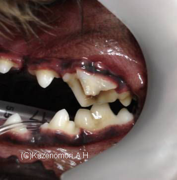

犬の場合、写真のように、上顎の第４前臼歯が欠けることが多いようです。
ペットフードを食べているペットたちは、よく噛んで食べる習性は少ないのですが、裂肉歯と呼ばれる、この歯は、硬いもの（金属などの人工的なもの）やおやつ（蹄、骨、腱など）を咬むときに使います。
ペットフードを食べているペットたちは、よく噛んで食べる習性は少ないのですが、裂肉歯と呼ばれる、この歯は、硬いもの（金属などの人工的なもの）やおやつ（蹄、骨、腱など）を咬むときに使います。
** Topic 201１年 １月**

●歯が欠けた！
犬は、ヒトと比べて、非常に咬む力が強いのですが、ヒトと同じように歯が欠けてしまうことがあります。
欠けてしまった歯は、しばらくすると、細菌感染が起き、歯根や歯肉などの歯周組織に膿がたまるようになります。ヒトでは、我慢が出来ないほどの、痛みを伴うようになりますが、犬では、痛くてたべなくなるのは、まれで、多くの場合、気がつかずに放置してしまうことが多いで多いようです。
（歯が痛いと、言ってくれたらよいのですが。。。）
歯周組織の炎症が強い場合は、抜歯をしなくてはいけませんが、欠けてしまった状態によっては、歯髄治療をして、歯牙を保存する治療もできます。
（写真の患者さんは、第４前臼歯が縦方向に割れてしまってます。割れた断面から歯髄が細菌感染をおこし、黒く変色してしまっています。歯肉にも、部分的に赤く腫れあがり、炎症があるのが疑われます。レントゲン検査の結果、保存不可能と判断し、抜歯しました。）
11月にしては、とても温かい。うれしく、外にでて空を見上げるとすばらしい秋空でした。
小さなまっかな飛行船が飛んでました。